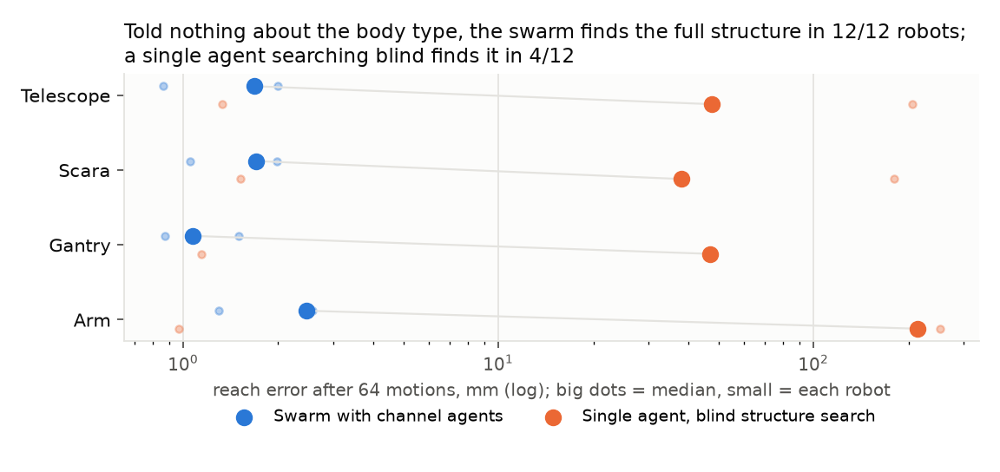
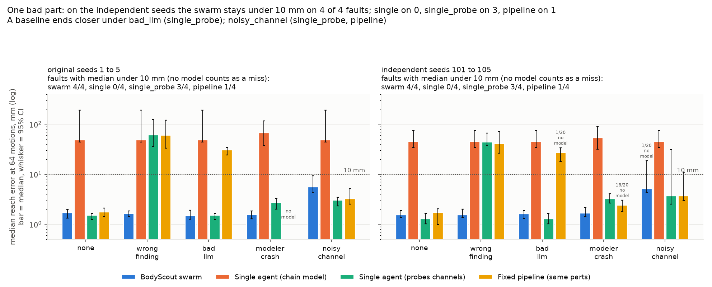
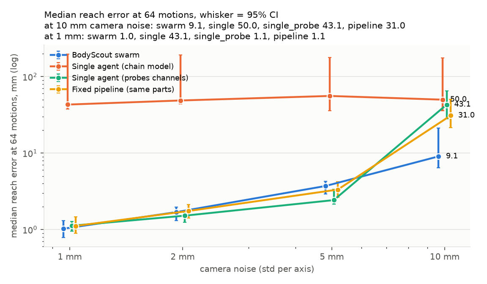
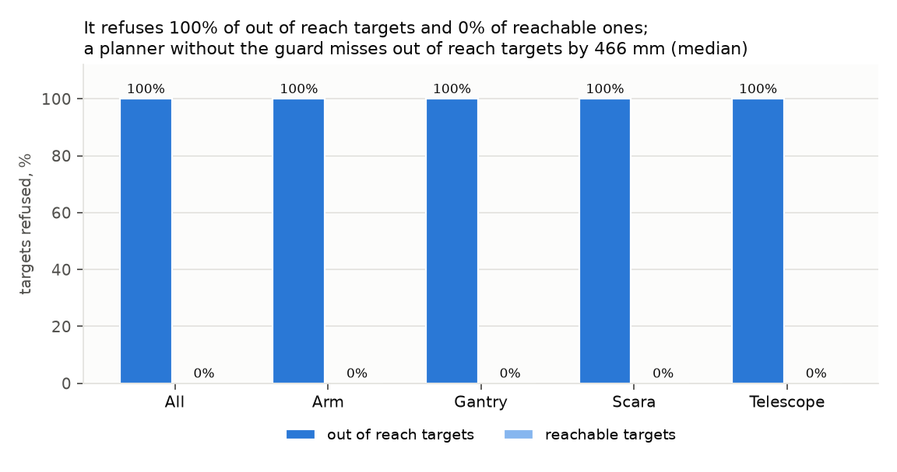

The task
Choose a point in the room. The fingertip has to arrive there, and later pick something up and set it down. A planner can do that only by turning the body description into joint commands.
ScienceClaw Hack · MIT Media Lab
To put a robot's fingertip on a point, a controller needs a description of the body: which command turns, which slides, how long each piece is, and the order they are wired. That description is a file a person usually writes. We do not have it. We are not told what kind of machine it is. And the body can change while we are using it.
BodyScout has to write that description from motion alone, reach with it, and notice when it stops being true.
Open with the job, not the method. The fingertip has to reach a point. The file that would make that possible is missing, and it can go stale.
The problem
Choose a point in the room. The fingertip has to arrive there, and later pick something up and set it down. A planner can do that only by turning the body description into joint commands.
A person writes a model file, a URDF or an MJCF. It says which joint rotates, which joint slides, about which axis, how long each link is, and which wire drives which joint.
There is no file. The machine might be an arm, a gantry, a SCARA, or a telescoping boom. The wires can arrive in any order. A link can stretch, a motor can reverse, a joint can lock, or the tool can be swapped while the run is going.
The hand goes to the wrong place. On four real arms, an agent that never recovers the body misses by 270 to 592 mm. After one link is made longer, a plan that keeps the old body sets a cube down on 4 tries out of 20, about 149 mm off. The rest of this briefing is how a swarm writes the missing file from fingertip readings, uses it, and throws it out when the body changes.
Stay on this scene until the room can say the problem back: reach a point, with no body file, and the body may not stay the one you just learned.
How to read this
This is the long version, for a judge who wants the problem, the hypothesis, the comparison, and the way to run it. A three-minute talk uses the cover, why the file matters, the black box, the board, the 4/4, and the close.
If the clock is short, skip to the black box, then the board, then the fault score.
The problem
Units in the code are metres and radians. Every number a person reads here is in millimetres.
What you are given instead
No joint names and no lengths. Send a number on each channel, and read back where the fingertip went. The picture on the right is one hidden body. The agents never get the links, even when you press Show the body.
tip waiting
Drag a channel. Sweep A draws the path of that channel alone. The noise drawn here is 2 mm, multiplied by 10 so a person can see it. Agents see the unmagnified version, and they never see the links.
Sweep channel A and let the arc appear before you reveal the links. That arc is the whole clue.
The problem
The swarm is not told which family it has. These are the generator's patterns. Wires can arrive in any order, and the agents have to recover the order too.
Hinges only. Three to five of them: a yaw at the base, then mostly pitch. Link lengths are random.
h · h · h · …
Three slides, like a printer or a liquid handler, then a rotating tool.
sx · sy · sz · hz
Two horizontal hinges, a vertical slide, and a wrist. The red segment is the slide.
hz · hz · sz · hz
Yaw, pitch, a boom that extends, and a wrist pitch. Cranes and telescoping arms.
hz · hy · sz · hy
The pictures are the generator's pattern. The swarm does not receive them.
The problem
Send one number per channel. Read back a fingertip, with noise.
How many numbers the command has. Not what they do.
The smallest and largest legal command. The same window for every channel.
The spec, the MuJoCo model, the true fingertip without noise, the skeleton, and any URDF or MJCF. Those exist so the scorer and the drawings can tell the truth.
A feature that needs the answer lives in the experiments or the scorer. It does not live in an agent. The same wall holds for the single-agent and pipeline baselines.
This is the constraint the whole design is built around. If a judge asks "did it peek?", the answer is on this slide.
Hypotheses
Each one is something the build was meant to test. The verdicts are at the end, after the evidence, so a loss stays a loss.
Sweep one channel. A straight fingertip path is a slide. An arc is a hinge. The line direction, or the arc's plane, is the axis.
A channel is settled only when two sweeps, from two poses, agree. If they disagree, every type stays on the board.
The same parts, free to disagree, beat one agent and a fixed pipeline when a part lies or dies. Same robots. Same 64 motions.
Repeated surprise on a few sentinel motions is enough to notice that the body changed. No one describes the damage.
The planner should decline a target the model has not earned, including any target beyond the body's reach.
When the structure is already known and there is nothing to discover, the swarm should not cost accuracy.
H3 is the one the rubric names: collective capability, same budget. H6 is the one we expected might fail, and it did.
Method
Agents post immutable notes. Every note names its parents. Needs sit open, with pressure, until someone serves them. No agent is the boss. The pipeline baseline is these same parts in a fixed order, run by one orchestrator.
The review agent and the monitor are the two roles with a single copy. Knocking the review agent out still left the structure right.
Method · H1
The fingertip rides a circle. The axis is the normal of that plane. Confidence is how far this is from being a straight line.
The fingertip rides a straight line. The axis is the direction of the line. A slide of one command unit is a fixed number of metres, learned with the length.
Two agents do this per channel. They do not see each other's raw path. They post a finding.
Method · H2
Channel 2 looks like a hinge about z.
The second pose says the same thing.
A hinge, not by much.
A slide. They do not match.
A disputed channel does not get deleted. Every type is proposed, so a wrong agreement is not the only story on the board. If the champion stays inaccurate, a review agent sweeps that channel from a third pose.
The second copy is the point of the swarm. One confident wrong report is what the fault test throws at it.
Method
Hypothesizers assemble findings into a chain, including the order of the channels. A prior, a library, and a language model can propose too, when a key is set.
A chain model turns that structure into link lengths and axes. Two chain modelers run with different seeds. A mixture model and a neural net fit the same data without a chain.
A validator refits a candidate from scratch. The refit has to reproduce the score. The public rule picks the lowest error on held-out motions. A near tie goes to the older candidate.
Any agent can compute the rule. The two validators are there so one crashed vote is not the end of the run. A failed replay used to kill the whole job. It now fails that candidate only. One such crash happened, was fixed, and that job was rerun.
Confidence is not the crown. A loud wrong hypothesis loses to a quiet model that predicts the holdout.
The comparison
Independent agents. Every role has a second copy, except the review agent and the monitor. They can disagree, and the crown picks.
One agent. It sweeps channels the same way, then fits one chain. No second opinion, no language-model slot.
The same parts as the swarm, one orchestrator, fixed order. The language-model stage has the last word.
One agent, one chain model, no channel sweeps. It searches structures without isolating a joint.
Same robots. Same motion budget. Same scorer. A neural net is the extra baseline on the known-arm curve. It never becomes competitive there, so it is not in the fault table.
Say "same robots, same 64 motions, same scorer" out loud. That sentence is the collective-capability score.
The test
On seeds 1 and 2, one wrong channel finding or one crashed chain modeler sank the swarm. Version 2 added a second probe from another pose, a review agent, and a second chain modeler.
Seeds 101 to 105 were added after those fixes. They are the independent check. Original seeds are shown beside them, not instead of them.
240 bodies, 480 damage runs, 800 fault runs, 320 noise runs, 48 real-arm runs, 30 learning-curve runs, 20 extrapolation runs. Language-model hypothesizers were off, so the same seed repeats.
If someone asks whether we tuned on the test, this is the answer. Designed on seeds 1 and 2. Scored on 101 to 105.
Results · H1, clean bodies
Interval 1.0 to 1.7. A hair closer than the swarm. The intervals overlap. On the original gantries the probe is genuinely closer: 0.9 mm against 1.8, and those intervals do not overlap.
Interval 1.0 to 2.0. Same structures, same story. Probing works. The collective is not what finds a clean body.
Swarm, probe, and pipeline 40/40. Single agent 6/40. Swarm reach 1.6 mm, interval 1.3 to 2.0, n = 40.
Independent seeds 101–105 and original seeds 1–10. results/summary.md §1. The swarm spends 36 of its 64 motions on sweeps, interval 32 to 40, n = 60.
Give the 20/20, then give it away: the probe and the pipeline also get 20/20. The swarm earns its keep on the next fault slide.
Results

Point at the red cloud, then at the pile on the left. That pile is the probe result. The swarm is not special yet.
Results · MuJoCo Menagerie
Franka Panda, UR5e, Kinova Gen3, ViperX 300s. Every joint the fingertip can reveal was right, in all 8 settings. n = 3 seeds each, so the interval is wide. The gap to the single agent is not.
| Arm | Channels | Swarm | Single | Observable joints |
|---|---|---|---|---|
| Panda | as built | 2.1 mm | 340 mm | 18/18 |
| Panda | shuffled | 2.6 mm | 506 mm | 18/18 |
| UR5e | as built | 1.9 mm | 285 mm | 15/15 |
| UR5e | shuffled | 2.0 mm | 348 mm | 15/15 |
| Gen3 | as built | 2.1 mm | 392 mm | 16/16 |
| Gen3 | shuffled | 2.0 mm | 592 mm | 16/16 |
| ViperX | as built | 2.4 mm | 297 mm | 15/15 |
| ViperX | shuffled | 2.0 mm | 270 mm | 15/15 |
§2. Some joints never move the fingertip enough to name. Those are left out of the observable count. All-joint fractions are lower, for example Panda shuffled 19/21.
Shuffled is the harder column, and it looks the same. Three seeds is a small n. Say so.
Which is better · H3 · independent seeds
| What we broke | Swarm | Probe | Pipeline | Single |
|---|---|---|---|---|
| Nothing | 1.5 mm · 20/20 | 1.3 mm · 20/20 | 1.7 mm · 20/20 | 45 mm · 5/20 |
| One channel agent reports the wrong type | 1.5 mm · 20/20 | 44 mm · 1/20 | 41 mm · 3/20 | 45 mm · no slot |
| A confident wrong hypothesis | 1.6 mm · 20/20 | 1.3 mm · no slot | 27 mm · 0/20 | 45 mm · no slot |
| One chain modeler dies at motion 24 | 1.7 mm · 20/20 | 3.2 mm · 20/20 | no model in 18/20 | 54 mm |
| 20 mm of noise on every sweep of one channel | 5.1 mm · 13/20 | 3.7 mm · 12/20 | 3.7 mm · 14/20 | 45 mm · no slot |
§5, seeds 101–105, n = 20 robots per cell. A run with no model counts as a miss. "No slot" means that fault cannot reach that method, so the run is the clean one. On the lying sensor the swarm also ended with no model in 1 of 20 runs.
Read the bottom row out loud. It is the fault the swarm loses. The 4/4 is still true, and it is not the whole story.
Which is better
The other pose still posts the right joint. The crown follows the holdout. Probe and pipeline have no second finding to prefer. 1.5 mm against 44 and 41.
The pipeline lets its language-model stage decide. It adopts the lie: 0 structures out of 20. The swarm's validators ignore it.
The other chain modeler is still fitting. The pipeline has one, and it is gone: no model in 18 of 20 runs.
Both probes see the same 20 mm bias, so they agree on the wrong thing. Sweeping less, the probe and the pipeline end closer. 3.7 mm against 5.1.

Three wins come from having a second opinion. The loss comes from two agents believing the same bad sensor.
Results · H4
Swarm alarms at or after the damage. The pipeline's monitor gets 95 / 120. This result belongs to the monitor, not to the collective.
Swarm runs with a trusted model 64 motions after the break. The pipeline has one in 112 / 120. Both single agents have one in 120 / 120. Relearning is the open problem.
The fingertip still lands near 2 mm, so there is little surprise to notice. The pipeline notices 0 of 20. The old model still reaches.
§3. Four families, five robots each, six kinds of damage. Medians after damage skip runs that ended with no model. For a bent axis that is 10 of 20 swarm runs.
Separate the alarm from the recovery. We notice about as well as the pipeline. We rebuild a trusted model more slowly.
Results · a task, not a score
Pick and place. A link is lengthened at motion 48. Twenty arms. Place error is measured only when the cube is actually placed.
While the alarm is open and no new champion is crowned, the planner refuses to move. That pause is why the swarm asks for a new plan and the single agent keeps using the old body.
§4. Damage kind: long link. n = 20.
This is the impact slide. The single agent could reach before the break. After it, the cube misses by a hand's width or more.
Results
The others at 10 mm: single 50 mm, probe 43 mm, pipeline 31 mm. Their structures are right on 4/20, 3/20, and 4/20. At 1, 2, and 5 mm the probe is as close or closer, and everyone who probes still names the structure. The gap opens when the noise gets large.
§6. n = 20 at each noise level. This is noise on every reading. It is not the one-channel lying sensor on the fault slide.

Name the two noise tests apart. One bad channel fools the swarm. Noise on every frame is where the extra sweeps pay.
Results · H5

The guard is allowed to be boring. Zero false refusals is the number that makes the 200 out of 200 believable.
Results · redundancy
Ten knockouts, twenty unknown bodies each. Structure right 20/20 on every row, including the loss of the review agent and the loss of the monitor. Reach stays between 1.4 and 1.7 mm.
Two caveats. The library was empty, so removing it changes nothing. Language-model hypothesizers were off, so their knockout was not run. And this is a clean body. The fault slide is where a missing replica actually matters.
§7 and results/knockout.md.
Knockout shows the discovery is not a single point of failure. It does not show that every agent is necessary. The fault test does that.
Honest limits
Swarm 5.1 mm and 13/20 structures. Probe and pipeline 3.7 mm. Independent seeds. Agreeing twice on a biased sweep is worse than sweeping once.
A trusted model at motion 128 in 59 of 120 swarm runs. The pipeline has one in 112 of 120. The alarm is fine. The rebuild is slow.
Noticed in 1 of 20. The reach error never really leaves 2 mm, so the monitor has almost nothing to see.
On arms whose structure is already known, the single agent wins at every checkpoint. At 64 motions, 1.5 mm against the swarm's 2.4. n = 10. H6 fails.
Probe 1.3 mm and pipeline 1.7 mm tie the swarm's 1.5 mm. Intervals overlap. On original-seed gantries the probe is ahead outright.
91.5 seconds of agent CPU per robot, interval 73 to 105. Pipeline 5.8 seconds. Probe 9.4. n = 60. The extra minute is the price of the second opinion.
§3, §5, §9, §10. The full comparison, including ties whose intervals overlap, is 102 rows in results/summary.md under "Failures we found".
Do not rush this slide. A judge who finds one of these in the appendix and did not hear it from you will discount the 4/4.
Hypotheses, after the evidence
| Bet | What the runs say | |
|---|---|---|
| H1 Path | Holds | 20/20 structures. The probe and the pipeline hold it too, so the sweep is the cause. |
| H2 Agreement | Holds | A wrong finding leaves the swarm at 1.5 mm and 20/20. The probe falls to 1/20. |
| H3 Collective | Holds on three faults | Wrong finding, bad hypothesis, dead modeler. Fails when one sensor lies on every sweep. Ties when nothing is wrong. |
| H4 Change | Holds for five kinds | 97/120 alarms. Payload is 1/20. The pipeline's monitor matches the alarm rate and rebuilds faster. |
| H5 Refusal | Holds | 200/200 far targets refused, 0/200 reachable ones refused. |
| H6 Known body | Fails | The single agent is closer at every checkpoint. Discovery has a cost when there is nothing to discover. |
This is the slide to leave up during questions.
Decentralized agency
Each note on the board names the notes it came from. The crowned model traces back to raw motions. The dashboard draws that chain, one lane per agent.
On a clean body the winning structure still came from the channel findings, after other sources had proposed something else. The crown settled it.
Those champions have parents too. The parents are stages of one program, run in order. They are not independent agents.
§11, faults | none | swarm. A vision agent was later added on the same board: two cameras instead of a marker, 3.0 to 4.3 mm median triangulation error by family (§13). Dynamics numbers are from before version 2 and were not rerun.
Open the dashboard if a judge wants to see a real trace. The ancestry count is the one-line version.
For other teams
robot_motion is the black-box window. Send commands. Get the fingertip in millimetres, and nothing else. Another team's agent can probe a body without learning our swarm.
A class with move, n_channels, and limits is enough to run the swarm. Add true_tip and a motion counter only if you want a score. The agents still cannot see true_tip.
The crowned chain is written as URDF, MJCF, body.json, and a report in millimetres. A length the motions could not pin is marked non-identifiable. Masses are placeholders, 0.1 kg.
Loading the MJCF and driving each joint with its scale reproduces the chain model's prediction to within 1 mm.
This is the reuse bonus. The skill, the command, and the files already exist. The next slide is the exact command.
How to use it
# tests, then a narrated run
python -m pytest -q
python demo.py
python demo.py --family scara
# learn a body and write the files
python -m bodyscout learn
--robot examples/arm.py:Arm --budget 64 --out export
python -m bodyscout learn
--robot path.py:Class --budget 64 --unknown --out export
# the black-box skill, and this briefing
python scienceclaw_skill/robot_motion/scripts/robot_motion.py
--family scara --seed 7 --n 5 --format json
python -m http.server 8000
Turns the channel agents on. Use it whenever the body might include a slide. Without it, the swarm assumes hinges.
Asks the hypothesizers to call a model, if a key is set in .env. Off by default. Every number in this briefing was measured with it off.
This briefing at /judge/. The provenance dashboard at /dashboard/. Copy joins a command that is shown on two lines.
One command per line. They work in PowerShell and in a Unix shell. --robot takes path.py:Class, and the last colon is the class name, so a Windows drive letter is safe.
How to use it
One link and one joint per channel. Revolute or prismatic. A prismatic joint stores metres per command unit.
The same tree as MJCF. Each joint's scale is a custom number, joint_metres_per_command.
Chain order, which channel drives which joint, axes, origins, the scale, and which lengths are identifiable.
The same facts in millimetres, for a person. A length the training motions could not pin is marked in all four files.
move, n_channels, limits. For a scored learning curve, also a motions counter and true_tip. Agents read the first three only.
One value per channel, inside the limits. The skill's examples use the window −2 to 2. The fingertip comes back in millimetres.
runs/*.jsonl is the provenance. Pass it to the dashboard with ?bb=../runs/your.jsonl if you want a judge to scrub the trace.
Hand a judge the report, not the JSON. The report is already in millimetres.
Before you quote it
The bodies are MuJoCo, procedural or from Menagerie. A real arm, with backlash and cable stretch, is future work. The two weak spots to fix first are the slow rebuild after damage and a sensor that lies every time.
Keys turn the hypothesizers on. Their answers vary, so the sweep left them off. A bad-hypothesis fault simulates a confident wrong source in that slot.
Menagerie is 3 seeds per arm and wiring. The known-arm curve is 10 arms. The body, fault, damage, and noise tables are 20 robots per cell.
The recovered-error number uses runs that still have a model. The share that do is 59/120 for the swarm. Read both.
Those runs predate the second probe, the review agent, and the second chain modeler. They were not rerun. They are not in the 4/4.
A validator replay hit a scipy SVD failure and killed a job. A failed replay now fails that candidate. The job was rerun. Finished jobs were left as they were.
The claim we will stand on is the independent-seed table, with the six losses beside it.
BodyScout
You are looking at it. Arrow keys, or the contents list.
The provenance of a real run, one lane per agent.
results/summary.md is the source. results/slide_numbers.md is the short list.
Stop talking. Leave the verdict slide or this one up.